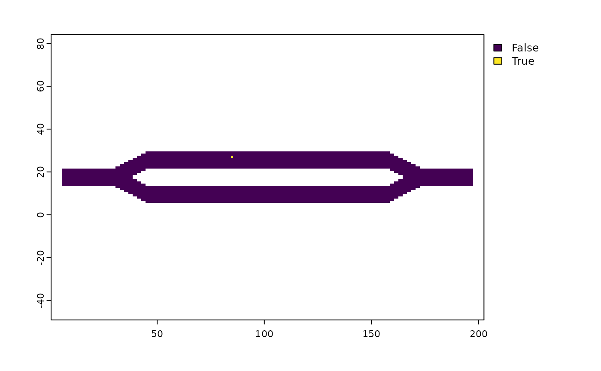
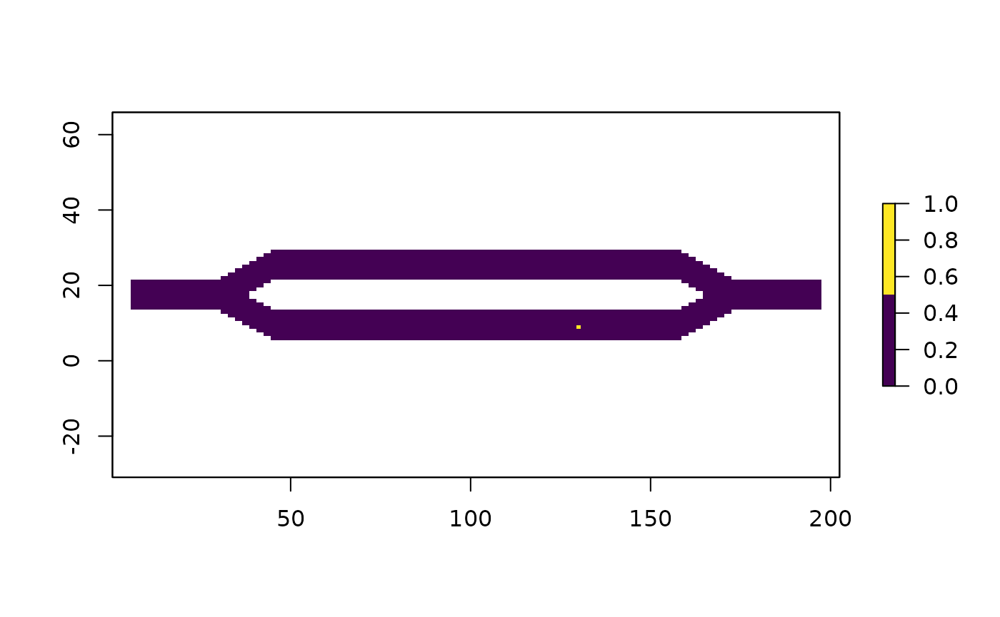

This tutorial discusses how to perform and retrieve results that are specific to individual locations.
Most of the analytical functions in this package provide the ability to get results that are specific to particular locations (e.g., cells or transient states). This accomplished through the use of origin and dest parameters, which correspond to row i and column j of the P matrix, respectively.
Locations can be specified one of two ways: First, they can be referred to via a positive integer value. These values map directly to the row/columns numbers of the P matrix (specifically, the transition matrix portion of P, aka Q). It’s important to not assume that the locations directly correlate to cell numbers in a raster layer or matrix (e.g., location 1 refers to the first cell of a raster). There is a relationship between the two, and in some cases there may be a direct correlation, but if the matrix or raster inputs contain NA’s, this will not be the case. This can make the creation and interpretation of location values tricky. The locate() function was specifically created to help with this. It can be used to get a raster that shows how the location values map to the raster. It can also be used to map xy coordinates to location values, which is recommended over manually choosing location values since coordinates have a clearer interpretation that makes it easier to catch and fix mistakes in code.
The second approach is to refer to locations by the row/column names of the P matrix. This is more applicable to samc-class objects directly created from a P matrix, which can have custom names applied to it via functions such as dimnames(), rownames(), and/or colnames(). It’ll be particularly useful via named nodes when graph support is added in a future release. Referring to locations by names has a significant advantage in that it makes it easier to read and interpret the code of an analysis, which in turn can make it easier to catch unintended mistakes (when using integers for location inputs, it may not be obvious that the wrong number was used if it refers to a valid location and returns a result).
# First step is to load the libraries. Not all of these libraries are stricly # needed; some are used for convenience and visualization for this tutorial. library("samc") library("raster") library("viridisLite") # "Load" the data. In this case we are using data built into the package. # In practice, users will likely load raster data using the raster() function # from the raster package. res_data <- samc::ex_res_data abs_data <- samc::ex_abs_data occ_data <- samc::ex_occ_data # Setup the details for our transition function tr <- list(fun = function(x) 1/mean(x), # Function for calculating transition probabilities dir = 8, # Directions of the transitions. Either 4 or 8. sym = TRUE) # Is the function symmetric? # Create a samc object using the resistance and absorption data. We use the # recipricol of the arithmetic mean for calculating the transition matrix. Note, # the input data here are matrices, not RasterLayers. samc_obj <- samc(res_data, abs_data, tr_args = tr)
# A couple examples of using numeric locations mort_origin <- mortality(samc_obj, origin = 7) head(mort_origin) # The result is a vector. Let's see the first few elements #> 1 2 3 4 5 6 #> 0.0004454945 0.0005970254 0.0006268049 0.0006652296 0.0007168680 0.0007962162 mort_dest <- mortality(samc_obj, dest = 13) head(mort_dest) # The result is a vector. Let's see the first few elements #> 1 2 3 4 5 6 #> 0.0004952858 0.0005096278 0.0005283281 0.0005495412 0.0005727323 0.0005978134 mort_both <- mortality(samc_obj, origin = 7, dest = 13) mort_both # The result is a single value #> 13 #> 0.0006250264 # The single value of mort_both simply is just extracted from one of the vector # results. So using both the origin and dest parameters is largely for convenience, # and helps to prevent accidental mistakes from trying to manually extract values # from the vectors mort_origin[13] #> 13 #> 0.0006250264 mort_dest[7] #> 7 #> 0.0006250264
# Use the locate() function to get a raster that shows pixels or cells as # location values locations_raster <- locate(samc_obj) # Plot it. since the location values increase incrementally from left to right and # top to bottom, it forms what appears to be a smooth gradient. If a user is # interested in identifying actual location values from this raster, they'll likely # have to save the raster and view it in external GIS software plot(locations_raster, col = viridis(1024)) # There's a simple way to see visually where a particular location is. The location # will be shown as 1 (converted from TRUE), and all other locations will be shown # as 0 (converted from FALSE) plot(locations_raster == 277, col = viridis(2))

Users can use the locate() function to convert coordinate information (or even line or polygon info) to locations. The coordinate information can be provided in a variety of ways, including a data frame, a matrix, sf spatial objects, etc. Given how locations map to a raster/matrix in the samc package, it is imperative that users do not use the cellFrom* functions from the raster package; they may work in some situations, but will generally produce incorrect location values for the samc package.
coords <- data.frame(x = c(50, 130), y = c(23, 9)) # Use the locate() function with coords to get location values locations <- locate(samc_obj, coords) plot(locations_raster == locations[1], col = viridis(2)) plot(locations_raster == locations[2], col = viridis(2)) # Use the locations in a function mort_1 <- mortality(samc_obj, origin = locations[1]) head(mort_1) #> 1 2 3 4 5 6 #> 0.0004313355 0.0005695849 0.0005833685 0.0005963590 0.0006070493 0.0006144510 mort_2 <- mortality(samc_obj, origin = locations[2]) head(mort_2) #> 1 2 3 4 5 6 #> 0.0001651789 0.0002113811 0.0002086714 0.0002057462 0.0002027257 0.0001996758

When specifying both the origin and dest parameters to a function, it is possible to provide multiple values as vectors. When doing so, the origin and dest vectors are paired, so they must be the same length. This eliminates the need for users to use for loops or apply statements to get results for multiple pairs of locations. Additionally, the built-in solution has optimizations not possible using external for loops or apply statements. The order of the outputs is guaranteed to match the order of the inputs.
# We're going to use a data.frame to manage our input and output vectors easily data <- data.frame(origin = c(45, 3, 99), dest = c(102, 102, 33)) # Use the locations in a function data$mort <- mortality(samc_obj, origin = data$origin, dest = data$dest) data #> origin dest mort #> 1 45 102 0.0002442529 #> 2 3 102 0.0001578835 #> 3 99 33 0.0002157067
Some users may wish to perform a pairwise analysis of all the combinations of the values in an origin vector and a dest vector, the results of which can be represented as a pairwise matrix. To accommodate this, the pairwise() utility function can be used. Since the input vectors aren’t paired, they can be different lengths. The result is in a ‘long’ format; to convert this result to a pairwise matrix, see the Code Snippets vignette.
# Get the result for all the pairwise combinations of two vectors of locations pairwise(mortality, samc_obj, 5:6, 23:25) #> origin dest result #> 1 5 23 0.0004605204 #> 2 6 23 0.0004784789 #> 3 5 24 0.0004510868 #> 4 6 24 0.0004686200 #> 5 5 25 0.0004418815 #> 6 6 25 0.0004590024